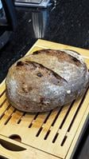

FERMENTAÇÃO NATURAL · TEMPO DE VERDADEUM POUCO DO BORORÓ
O tempo também
é ingrediente.
O Bororó reúne café de torra própria, pães de fermentação natural e comida artesanal. Um convite para desacelerar, escolher algo gostoso e aproveitar a pausa.
Uma casa de bairro em São José dos Campos, com sabores preparados com cuidado e espaço para voltar.
Conheça o Instagram ↗Café Bororó ✳